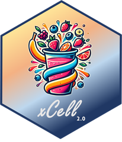
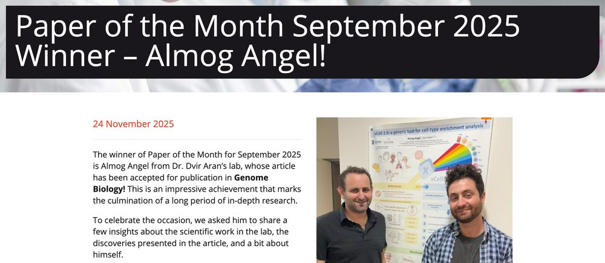

Genome Biology
Bioconductor R package
xCell 2.0: cell-type enrichment that predicts immunotherapy response
A next-generation tool that turns bulk transcriptomes into cell-type proportions using ontology-aware modeling, improved signatures, and spillover correction. It outperforms eleven existing deconvolution methods and predicts patient response to immune checkpoint blockade. Released as an open-source Bioconductor R package.
